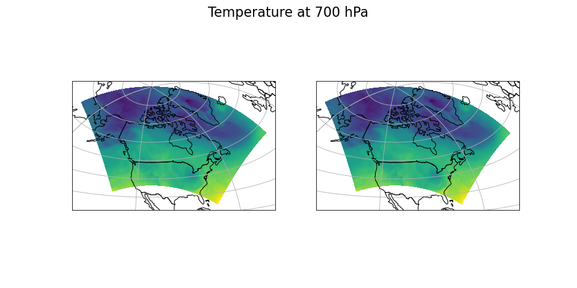
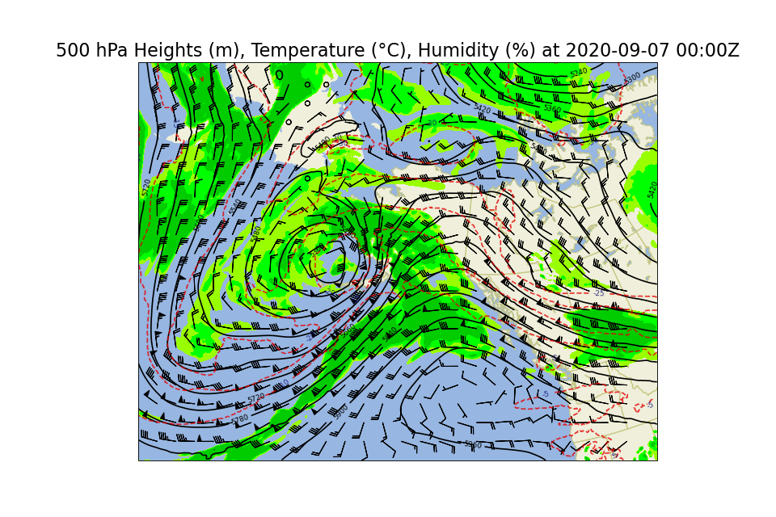

Plotting Datasets¶
Datasets opened by pywgrib2_xr can be plotted with cartopy:
import xarray as xr
import cartopy.crs as ccrs
import cartopy.feature as cfeature
import matplotlib.pyplot as plt
import pywgrib2_xr as pywgrib2
from pywgrib2_xr.utils import localpath
file = localpath('CMC_glb_TMP_ISBL_700_ps30km_2020012512_P000.grib2')
tmpl = pywgrib2.make_template(file)
ds = pywgrib2.open_dataset(file, tmpl)
country_boundary = cfeature.NaturalEarthFeature(category='cultural', name='admin_0_countries', scale='110m', facecolor='none')
map_crs = ccrs.AzimuthalEquidistant(central_longitude=249)
t = ds['TMP.700_mb']
fig, (ax1, ax2) = plt.subplots(1, 2, figsize=(12, 6),
subplot_kw={'projection': map_crs})
_ = t.plot(x='longitude', y='latitude', ax=ax1, transform=ccrs.PlateCarree(),
add_colorbar=False, add_labels=False)
proj = ds.wgrib2.get_grid()
globe = ccrs.Globe(ellipse="sphere", semimajor_axis=proj.globe["earth_radius"],
semiminor_axis=proj.globe["earth_radius"])
data_crs = ccrs.Stereographic(globe=globe,
central_latitude=proj.crs['latitude_of_projection_origin'],
central_longitude=proj.crs['straight_vertical_longitude_from_pole'],
true_scale_latitude=proj.crs['standard_parallel'])
_ = t.plot(x='x', y='y', ax=ax2, transform=data_crs, add_colorbar=False,
add_labels=False)
for ax in ax1, ax2:
_ = ax.add_feature(country_boundary, edgecolor='black')
_ = ax.gridlines()
fig.suptitle('Temperature at 700 hPa', fontsize=20)
plt.show()
(Source code, png, hires.png, pdf)
{kind=link}
{kind=link}

The plot on the left uses latitudes and longitudes, the one on the right in
Cartesian (grid) coordinates. The latter requires more code, since CF projection
parameters have to be translated to cartopy names.
pywgrib2_xr does not provide automatic name translation since it is
readily available from MetPy through its accessor property
metpy.cartopy_crs.
The next example is adapted from
MetPy tutorial.
Dataset read by pywgrib2_xr is processed by MetPy function parse_cf().
import xarray as xr
import cartopy.crs as ccrs
import cartopy.feature as cfeature
import matplotlib.pyplot as plt
import metpy.calc
from metpy.units import units
import pywgrib2_xr as pywgrib2
from pywgrib2_xr.utils import remotepath
def predicate(i):
return (i.varname in ('RH', 'TMP', 'UGRD', 'VGRD', 'HGT') and
i.bot_level_code == 100 and 10000 <= i.bot_level_value < 1000000)
file = remotepath('nam.t00z.awak3d00.tm00.grib2')
tmpl = pywgrib2.make_template(file, predicate, vertlevels='isobaric')
var_names = {'RH.isobaric': 'relative_humidity',
'TMP.isobaric': 'temperature',
'UGRD.isobaric': 'u',
'VGRD.isobaric': 'v',
'HGT.isobaric': 'height',
}
ds = pywgrib2.open_dataset(file, tmpl).rename(var_names)
data = ds.metpy.parse_cf()
x, y = data['temperature'].metpy.coordinates('x', 'y')
data_crs = data['temperature'].metpy.cartopy_crs
data['temperature'].metpy.convert_units('degC')
vertical, = data['temperature'].metpy.coordinates('vertical')
data_level = data.metpy.loc[{vertical.name: 500. * units.hPa}]
fig, ax = plt.subplots(1, 1, figsize=(12, 8), subplot_kw={'projection': data_crs})
rh = ax.contourf(x, y, data_level['relative_humidity'], levels=[60, 70, 80, 100],
colors=['#99ff00', '#00ff00', '#00cc00'])
wind_slice = slice(20, -20, 20)
_ = ax.barbs(x[wind_slice], y[wind_slice],
data_level['u'].metpy.unit_array[wind_slice, wind_slice].to('knots'),
data_level['v'].metpy.unit_array[wind_slice, wind_slice].to('knots'),
length=6)
h_contour = ax.contour(x, y, data_level['height'], colors='k',
levels=range(5000, 6200, 60))
_ = h_contour.clabel(fontsize=8, colors='k', inline=1, inline_spacing=8,
fmt='%i', rightside_up=True, use_clabeltext=True)
t_contour = ax.contour(x, y, data_level['temperature'], colors='xkcd:red',
levels=range(-50, 4, 5), alpha=0.8, linestyles='--')
_ = t_contour.clabel(fontsize=8, colors='xkcd:deep blue', inline=1, inline_spacing=8,
fmt='%i', rightside_up=True, use_clabeltext=True)
_ = ax.add_feature(cfeature.LAND.with_scale('50m'), facecolor=cfeature.COLORS['land'])
_ = ax.add_feature(cfeature.OCEAN.with_scale('50m'), facecolor=cfeature.COLORS['water'])
_ = ax.add_feature(cfeature.STATES.with_scale('50m'), edgecolor='#c7c783', zorder=0)
_ = ax.add_feature(cfeature.LAKES.with_scale('50m'), facecolor=cfeature.COLORS['water'],
edgecolor='#c7c783', zorder=0)
time = data['temperature'].metpy.time
vtime = data.reftime + time
_ = ax.set_title('500 hPa Heights (m), Temperature (\u00B0C), Humidity (%) at '
+ vtime.dt.strftime('%Y-%m-%d %H:%MZ').item(),
fontsize=20)
plt.show()
(Source code, png, hires.png, pdf)
{kind=link}
{kind=link}
